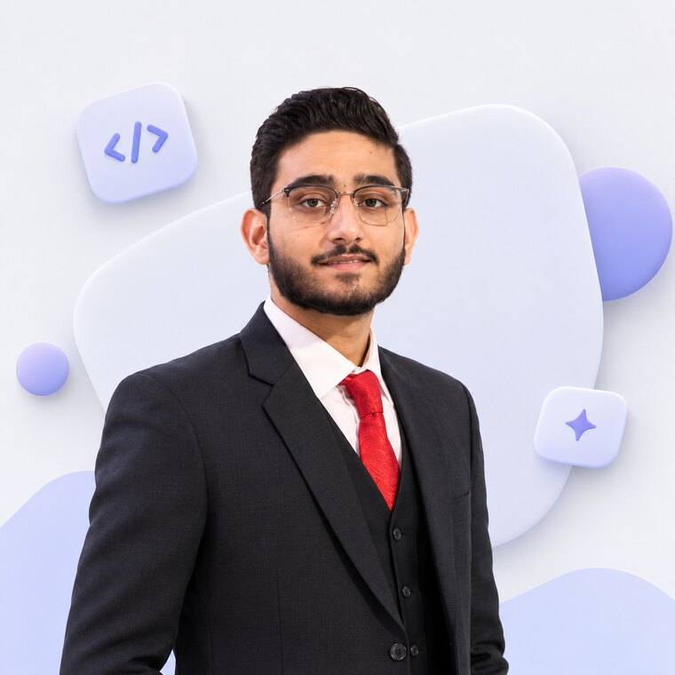

I build AI-driven applications — LLM interfaces, NLP, and full-stack products.
Computer Science graduate. AI intern at Systems Limited, co-author on the Med-GReF research working paper, and a builder of LLM-powered apps with local models and the Next.js stack.

Research-minded, product-focused.
I work across the AI lifecycle — from designing and training models to shipping them behind an API or a Streamlit dashboard. During my AI internship at Systems Limited I worked on open-source LLM tooling, business-automation solutions, and NLP for text classification and summarization, alongside senior data scientists and AI engineers.
Outside of that I co-author Med-GReF, an in-progress working paper on hallucination verification for medical vision-language models, and I build full-stack AI apps — natural-language database interfaces, agentic automations, and real-time dashboards.
BSc Computer Science
Salim Habib University, Karachi — graduated June 2026.
Open to work
AI engineer, ML engineer, and full-stack AI roles.
AI Intern — Systems Limited
Jun 2025 – Aug 2025 · Karachi
- • Developed and experimented with open-source LLM tooling.
- • Built AI-driven business-automation solutions to cut manual work.
- • Worked on NLP — text classification and summarization.
- • Deployed models to production via APIs and Streamlit dashboards.
- • Collaborated with senior data scientists and AI engineers.
Med-GReF — co-author
Evidence-guided multimodal fusion and an NLI hallucination verifier for medical vision-language reasoning. In progress — drafted in NeurIPS format, not yet submitted or peer-reviewed. Draft results: accuracy 0.817 → 0.912.
Read the draftText-to-SQL App
Plain-English → SQL using local LLMs (SQLCoder via Ollama), served with Streamlit.
Code ↗AI Tour Booking App
Travel assistant with an AI agent that finds the cheapest flights and hotels. Next.js, Prisma, PostgreSQL, Make.com, ShadCN.
Sales Forecast — Daraz
Regression model predicting product sales; cut RMSE ~23% via tuning and feature engineering. scikit-learn, pandas.
More on GitHub
Coursework, web experiments, and data notebooks.
All repositories ↗Industrial Monitoring & Control Console
Sep 2025 – May 2026 · in collaboration with SUPARCO Pakistan
A real-time industrial monitoring dashboard with a Digital Twin simulator for PLC telemetry. JWT auth, role-based access control, and automated email alerts; Modbus TCP, Docker and InfluxDB for low-latency processing. Next.js, React, ASP.NET Core (.NET 8), Grafana. Team project.
Résumé (PDF)
The one-page version — experience, projects, and skills.
Download